belt.ran
betaDê seus bancos aos agentes de IA — não suas senhas.
Um cliente de banco nativo e leve (~8 MB) que também é um servidor MCP seguro: Claude Code, Codex e outros agentes consultam as conexões que você já cadastrou — a senha fica no Keychain, produção é somente-leitura e escritas de risco esperam a sua aprovação.
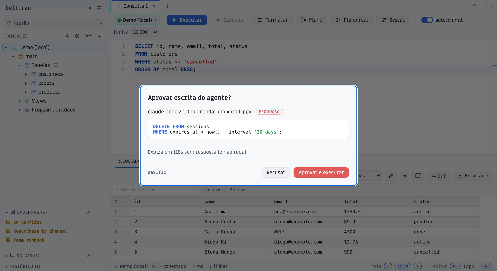
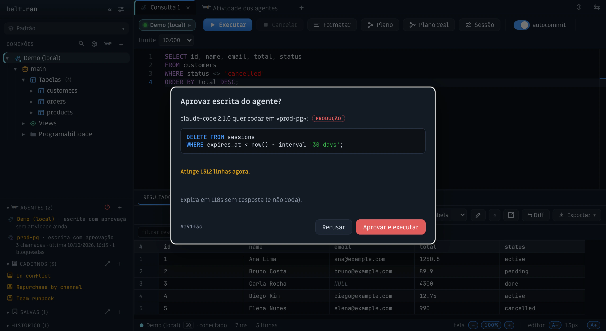
Download
Confira o download (SHA-256)
Cada release publica um arquivo SHA256SUMS.txt. Compare o hash do arquivo que você baixou com a linha dele nesse arquivo. Importa mais no Windows, onde o instalador ainda não é assinado.
# macOS / Linux
shasum -a 256 belt.ran-macos.dmg
# Windows (PowerShell)
Get-FileHash .\belt.ran-windows-setup.exe -Algorithm SHA256Por que belt.ran
Seus bancos, seguros para agentes de IA
Pare de colar credenciais em chats ou subir containers descartáveis só para o agente ler um banco. O belt.ran vira o servidor MCP do seu Claude Code, Codex ou Cursor — usando as conexões que você já tem.
- A senha nunca sai do Keychain — o agente não vê credencial nenhuma.
- Opt-in por conexão — só aparece o que você liberou em «Acesso para agentes».
- Produção é somente-leitura — no Postgres, MySQL, SQLite e ClickHouse quem garante é o próprio banco (a sessão abre em modo leitura); nos demais engines, uma guarda por comando.
- Escritas esperam a sua aprovação — você vê o SQL exato e aprova ou nega; sem resposta em dois minutos, não roda.
- Dados sensíveis mascarados — e-mail, CPF, telefone, senha e token chegam mascarados ao agente; a sua grade continua mostrando tudo.
- Cancelar cancela — parar o agente mata a query no servidor (Postgres, MySQL, SQL Server, ClickHouse, Mongo…); nos demais, aborta a requisição em andamento.
- Tudo auditado — cada chamada do agente fica registrada na aba «Atividade dos agentes».
$ claude mcp add --scope user beltran -- beltran mcp
Instalou pelo .dmg? Troque beltran pelo caminho completo: /Applications/belt.ran.app/Contents/MacOS/beltran. Ou dispense o terminal: conecte Claude Code, Claude Desktop, Cursor ou Codex com um clique em «Acesso para agentes» da conexão.
Aprove antes de gravar.
Quando um agente quer alterar dados, o belt.ran para e mostra o comando exato — com a conexão, o ambiente e uma contagem regressiva. Aprovou, roda; negou, ou ignorou, nunca roda.
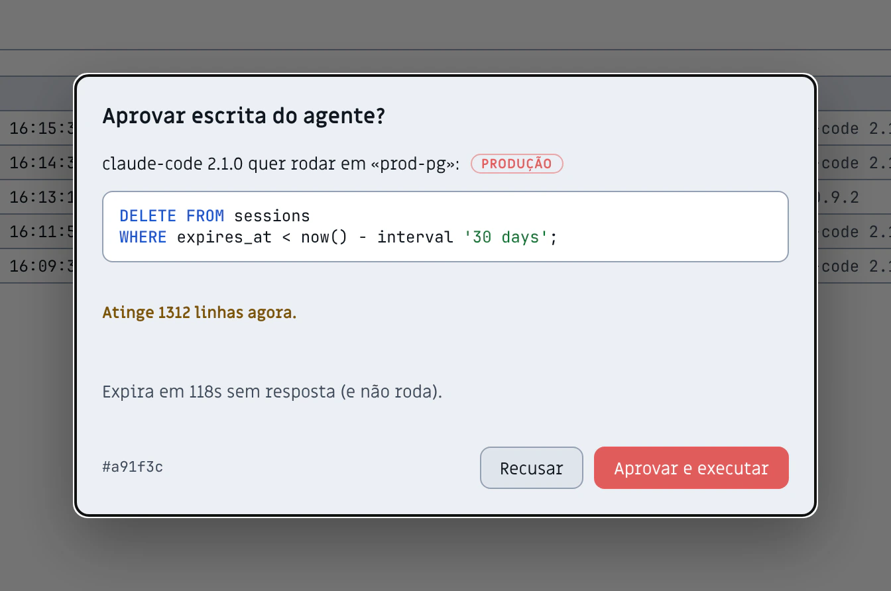
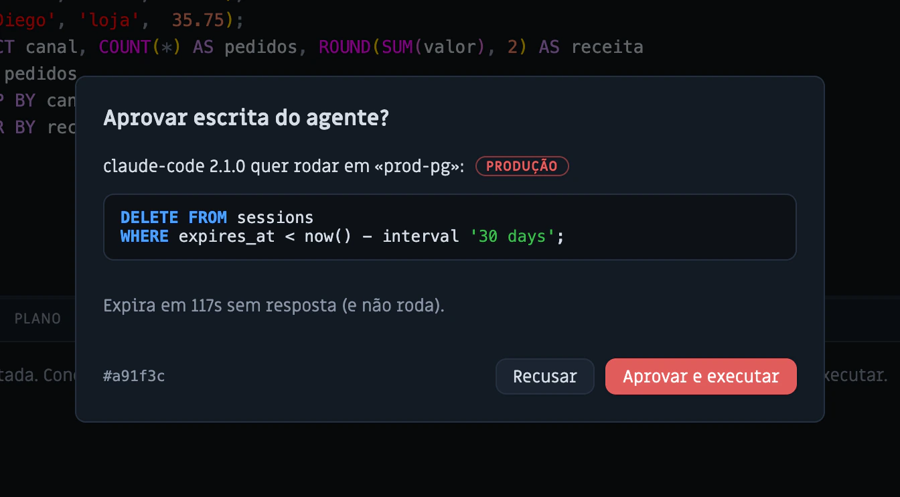
Veja o que está rodando — e pare.
Enquanto uma query do agente roda, um painel ao vivo mostra a conexão, o SQL e o cronômetro. Um clique cancela no servidor.
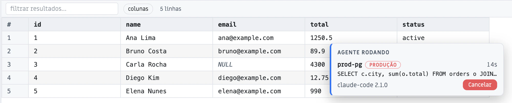
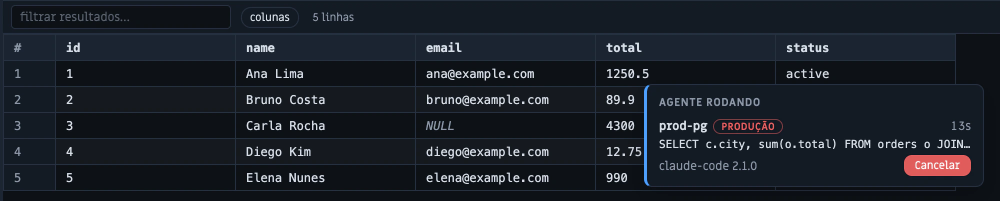
Cada chamada, auditada.
O registro de tudo que os agentes fizeram: o que rodaram, quanto demorou, o que foi bloqueado — com o SQL colorido. Fica só no seu computador.
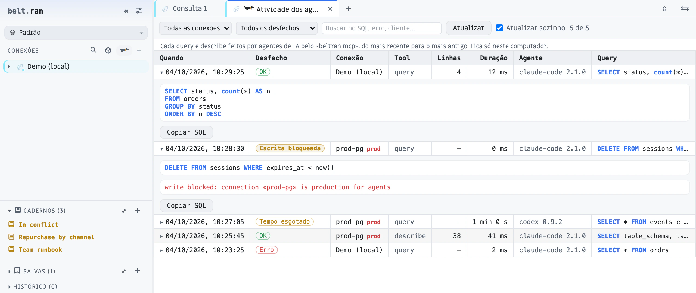
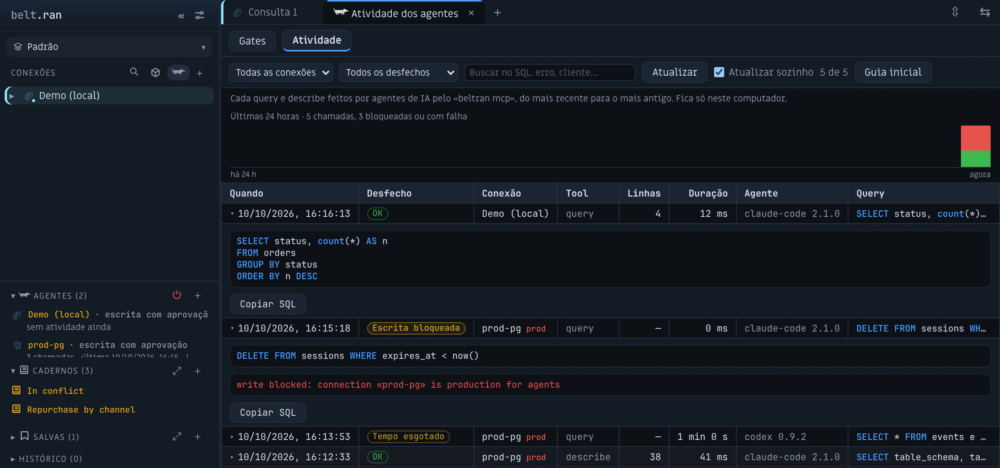
Conecte seus agentes com um clique.
Claude Code, Claude Desktop, Cursor e Codex: conecte ou desconecte em «Acesso para agentes» da conexão. Descreva o banco para o agente escolher o certo, defina tempo limite e política de escrita, e escolha quais colunas mascarar.
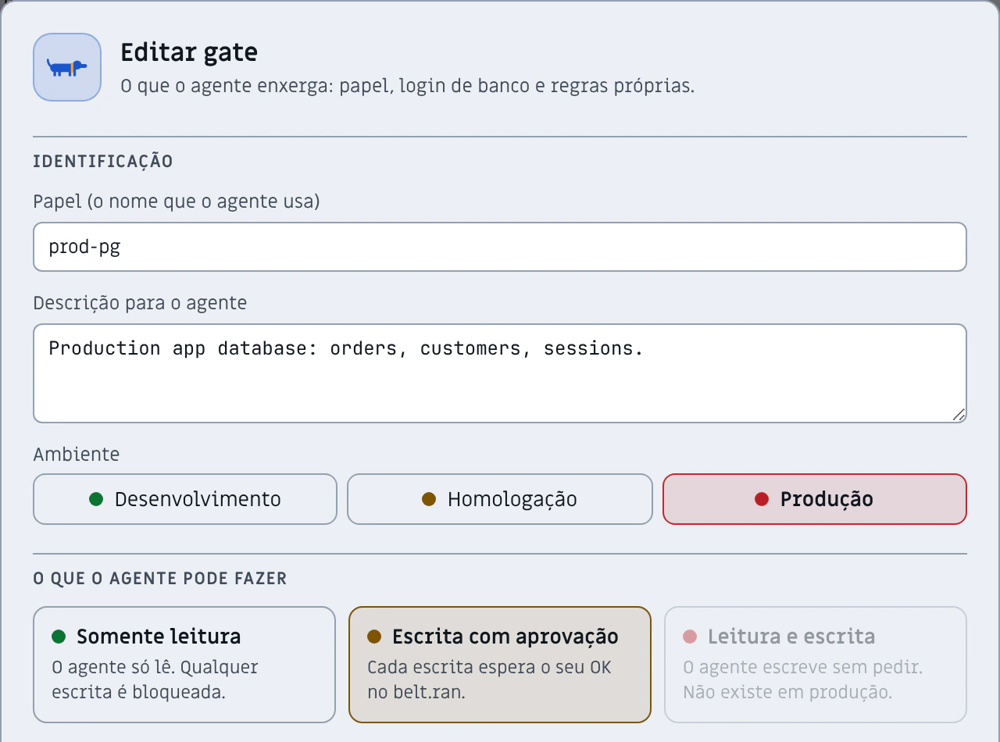
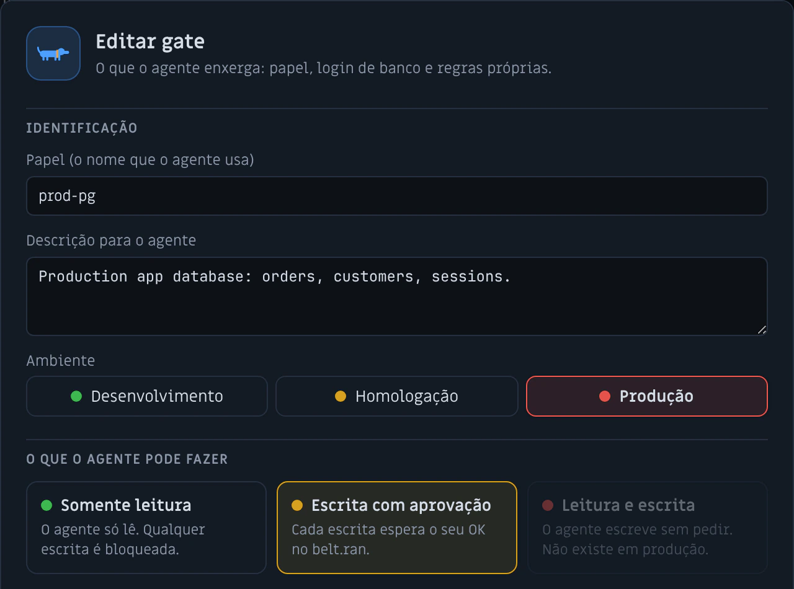
Por que não um servidor MCP comum?
Existem bons servidores MCP de código aberto para Postgres, MySQL e outros. Eles foram feitos para expor um banco a um agente; o belt.ran foi feito também para proteger o banco dele.
| Topic | Um servidor MCP de banco típico | belt.ran |
|---|---|---|
| Credenciais | String de conexão em argumento, variável de ambiente ou arquivo de configuração | A senha fica no chaveiro do sistema; o agente nunca a vê |
| Produção | Somente-leitura por convenção ou por filtro do texto do SQL | Somente-leitura garantida pela sessão do banco no Postgres, MySQL, SQLite e ClickHouse |
| Escritas | Liberadas ou bloqueadas — sem meio-termo | Pausadas até você aprovar o SQL exato |
| Dados sensíveis | Devolvidos como estão | Mascarados: e-mail, CPF, telefone, senha, token |
| Auditoria | O que o cliente do agente registrar | Toda chamada registrada e pesquisável, no seu computador |
Um cliente de banco de verdade por baixo.
Explorer para 11 engines, editor SQL com IntelliSense e uma grade que faz streaming de milhões de linhas — o cliente que você usaria todo dia, com ou sem agente no meio.
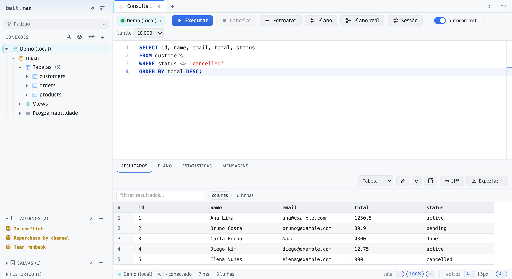
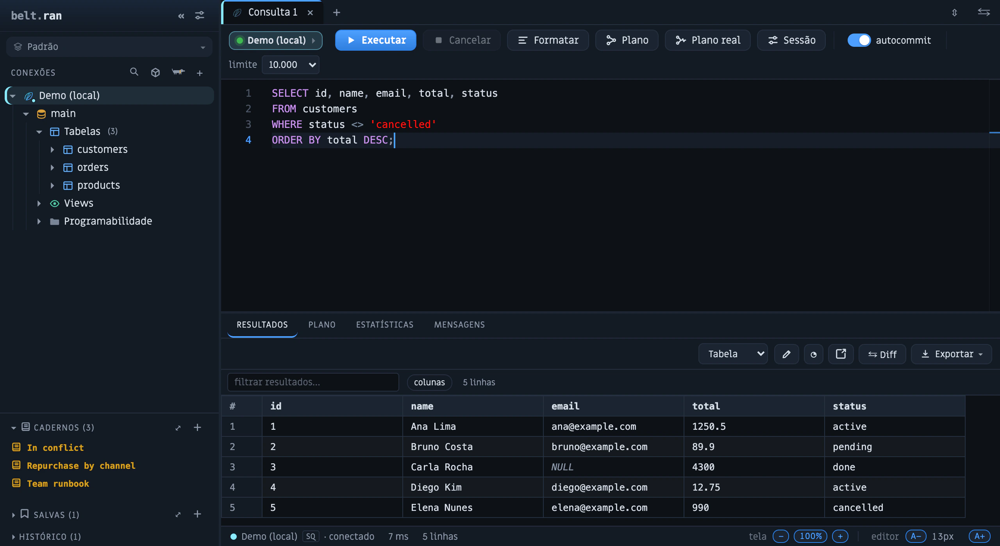
Uma conexão dedicada por aba
Nada de fila numa conexão compartilhada. Cada aba roda na sua: queries em paralelo, cancelamento real (out-of-band, direto no servidor — não enfileirado) e reconexão automática quando a sessão cai. Cancelar é cancelar, de verdade.
11 engines, um explorer só
Relacional, analítico, NoSQL e streaming no mesmo app. O belt.ran fala a organização nativa de cada motor e apresenta tudo numa navegação coerente — schemas, bancos, tópicos, chaves e coleções, sem trocar de ferramenta:
Core em Rust, ~8 MB. Abre num piscar — sem JVM, sem Electron.
Cursor no servidor, scroll infinito e backpressure real.
Árvore com custo, linhas e tempo por nó (Postgres e MySQL).
Docs estilo Notion + Git + Jupyter, com versões, params e backlinks.
Grátis durante o beta
O cliente individual é gratuito enquanto o belt.ran está em beta, e a intenção é que continue assim: se houver planos pagos, eles cobrirão recursos de time (políticas de agente compartilhadas, exportação da auditoria) — não o que você usa hoje.
O belt.ran é software proprietário; os instaladores são públicos. Ele conecta direto do seu computador aos seus bancos, e as senhas ficam no chaveiro do sistema operacional. Os componentes de terceiros e suas licenças estão nos avisos.
Sem telemetria. Além dos bancos em que você conecta, o belt.ran fala com o GitHub ao abrir (para checar atualizações) e, só se você abrir o catálogo MCP, com o registro oficial de MCP. O que um agente lê é processado pelo provedor de modelo desse agente — por isso somente-leitura, aprovação e mascaramento importam.